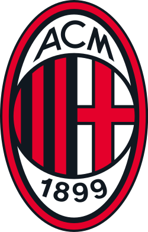

Founded in 1899, based in Milan, Italy.
home stadium is the San Siro (Shared with rivals inter millan)
Nickname: Rossoneri (Red & Blacks).
Won 7 Champions League titles.
Great rivalry with Inter in the Derby della Madonnina.
Known for strong defensive history (Maldini, Baresi, Nesta).
Iconic red-and-black striped kits.
Huge fanbase in italy and worldwide
Peak dominance in the late 1980s and early 2000s.
Most successful italian club
Top 3 Legends:
1 Paolo Maldini
2 Kaká
3 Ruud Gullit